Începem
Ce sunt editoarele grafice
Un editor grafic este o aplicație cu care creezi, modifici și salvezi desene sau fotografii în format digital, sub formă de fișiere grafice.
Unde le găsești
Unele sunt incluse în sistemul de operare. Altele trebuie instalate pe dispozitivul cu care lucrezi. Există și aplicații online, dar verifică dacă sunt gratuite.
Exemple de editoare
Ce îți trebuie
Timp de lucru, imaginație și creativitate. Un peisaj, un afiș sau o felicitare reușită cere răbdare.
Paint este instalat în Windows. În funcție de versiunea sistemului, are două variante: Paint 2D și Paint 3D, amândouă cu interfețe prietenoase. Mai jos le explorezi pe rând, chiar pe imaginile din manual.
Explorează interfața
Paint 3D
Apasă pe o zonă din imagine sau pe un buton de sub ea. În dreapta apare explicația.
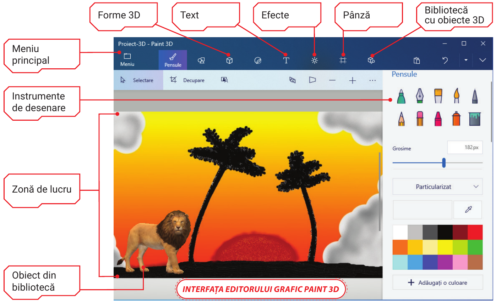
Explorează interfața
Paint 2D
Aceeași idee, altă fereastră. Aici ai o panglică cu grupuri de butoane în partea de sus.
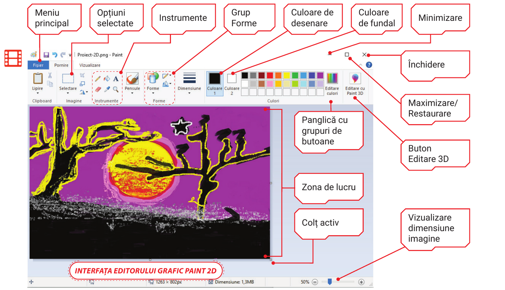
Studiază și descoperă
Tipuri de fișiere grafice
Imaginile digitale sunt făcute din elemente foarte mici numite pixeli. Fiecare pixel are propria culoare, opacitate (transparență) și poziție.
Rastru sau vectorial
Modele tridimensionale
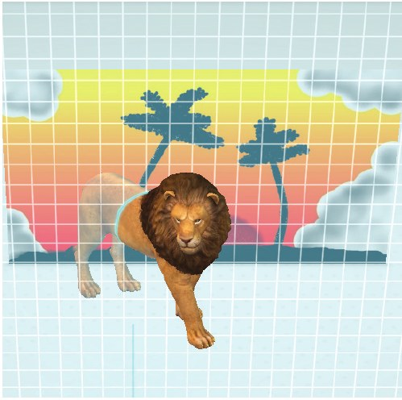
Stochează informații despre culoare, texturi, surse de lumină și geometrie. Se folosesc în arhitectură, medicină, efecte de film și jocuri.
Mărește imaginea și vezi diferența
Trage cursorul. Inima din stânga e făcută din pixeli, cea din dreapta din linii descrise prin formule matematice.
Rezoluția unei imagini rastru este numărul de pixeli pe lungime și pe lățime. Cu cât rezoluția e mai mare, cu atât imaginea are o dimensiune mai mare.
Pas cu pas
Cum realizezi un desen
Alege un pas din listă sau folosește butoanele Înapoi și Înainte.
Particularizarea culorilor
Amestecă roșu, verde și albastru
Modelul RGB (Red, Green, Blue) este folosit pentru a reprezenta imaginile în sistem digital. Mută cursoarele și vezi ce culoare obții.
În Paint 2D, Culoare1 este culoarea cu care desenează instrumentul ales. Culoare2 este culoarea fundalului, când faci o selecție.
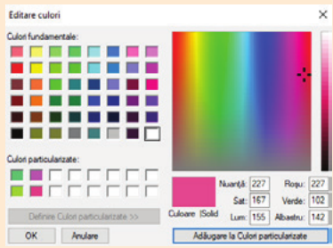
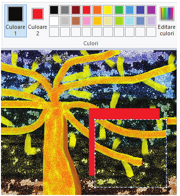
Încălzire
Încearcă singur
Un Paint în miniatură, doar pentru exersat. Desenează cu degetul sau cu mouse-ul. Desenul de aici nu se salvează, așa că cel adevărat îl faci în Paint.
Fișa de lucru
Adevărat sau fals?
Apasă A pentru adevărat sau F pentru fals.
Inspirație
Lucrări din manual
Desene realizate în Paint, cu forme, pensule și culori particularizate.
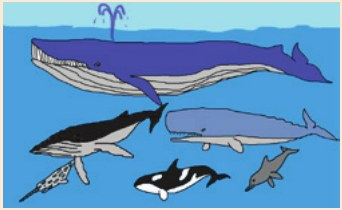
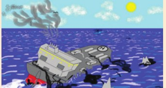
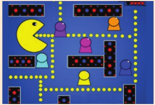
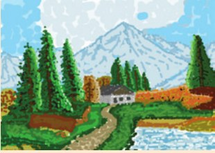
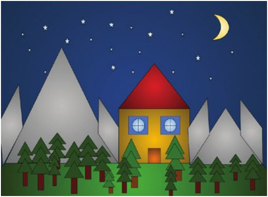
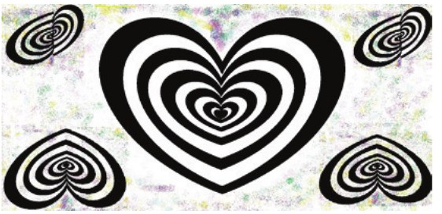
Provocarea finală
Mascota clasei
Fiecare clasă are o poveste, iar povestea are nevoie de un chip. Creează în Paint mascota clasei tale: un personaj nou, inventat de tine, pe care colegii să-l recunoască de la distanță.
Ce trebuie să conțină desenul
Nu ai idei? Cere una
Ideea e doar o scânteie. Schimbă-o cum vrei.
Reguli. Mascota trebuie să fie creația ta: nu copia un personaj din desene animate, jocuri sau filme. Lucrează singur sau în echipă, dar toată clasa votează la final.
Salvează fișierul cu numele Mascota_clasei, în folderul Portofoliu digital.